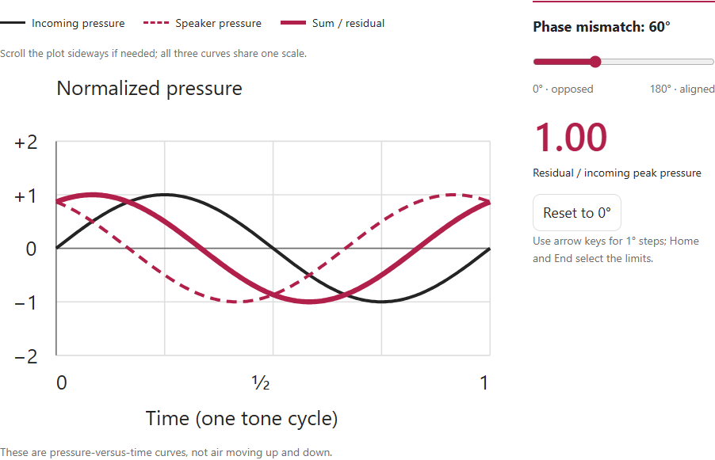
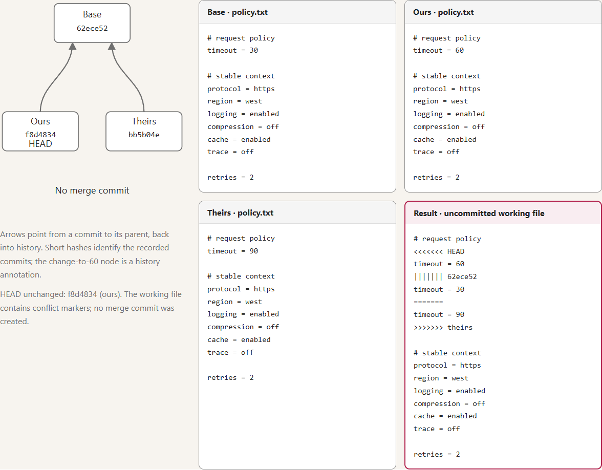
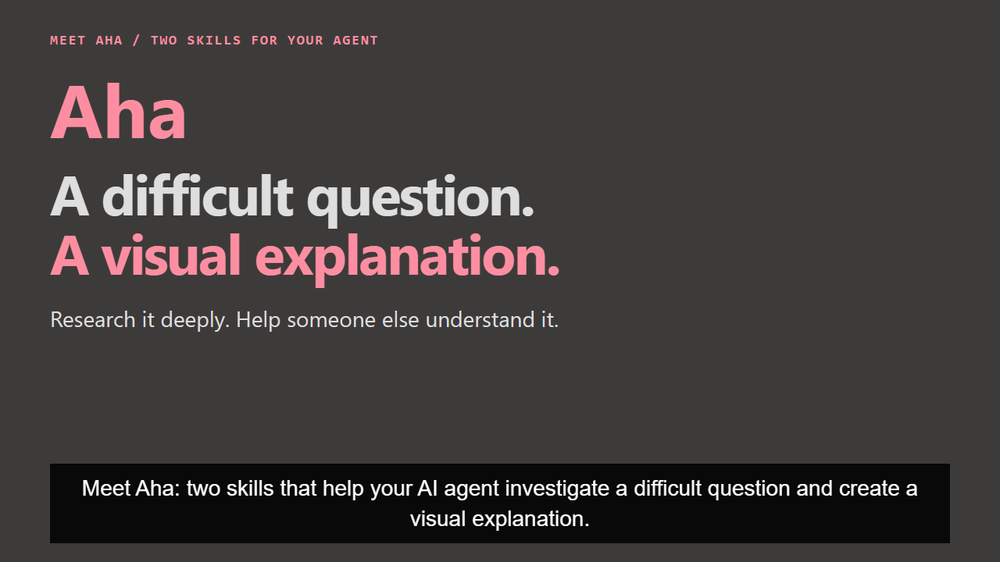
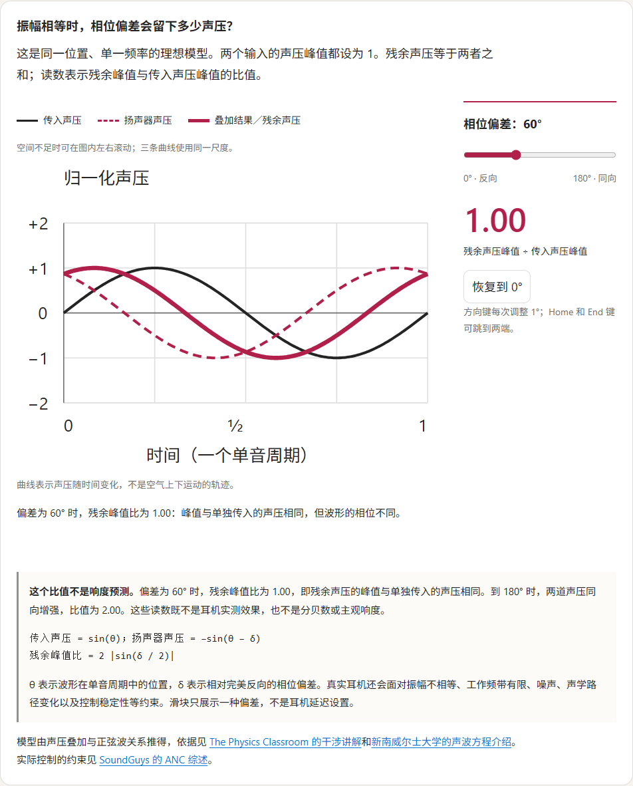
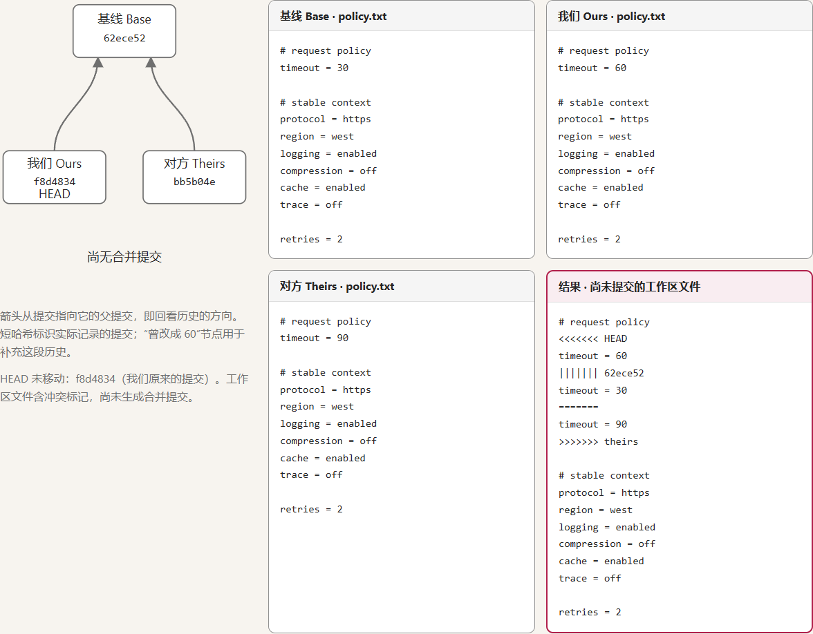

Noise cancellation: compare the sounds at the ear
The original control changes the model’s pressure curves and residual readout. It gives the reader a concrete relationship to inspect, rather than only the phrase “opposite sound.”
AHA / RESEARCH + VISUAL EXPLANATION
Aha is a pair of agent skills for turning questions and source material into a researched explanation people can read, explore or present.
A question, any starting material, your audience, and the output you need.
For example: “Explain headphone noise cancellation to curious non-specialists as an interactive HTML page.”
01 / EXISTING WORK
These are two existing bilingual, offline HTML explanations in the repository. Each uses a different comparison to make its topic inspectable.

The original control changes the model’s pressure curves and residual readout. It gives the reader a concrete relationship to inspect, rather than only the phrase “opposite sound.”

The original page compares the common base, both branch snapshots and the result. Its controls switch between a reverted change, separated edits and conflicting replacements.
02 / FROM QUESTION TO SOMETHING USEFUL
Read sources, compare contradictory evidence and record gaps. Keep the claims and their evidence in a research snapshot so the explanation has something to build on.
Turn the supported reasoning into a comparison, diagram or sequence. A reader exploring alternatives needs a different composition from a team watching a short briefing.
Deliver editable source plus the usable output for the requested medium. Review the actual result so the explanation, controls and layout can be checked together.
Two skills, two entry points. Use aha-research when you want a research report. Use aha-explain when you want a visual artifact; it can use the shared research workflow itself.
Sources: Skill entry points and research and artifact architecture.
03 / CHOOSE THE READER’S EXPERIENCE
An HTML page, a PNG image, editable PowerPoint slides or a narrated video. Choose the format for the situation—not four exports of the same layout.
A page combines explanation, diagrams and purposeful controls. Example: explore the three Git merge cases shown above in the original offline HTML.
Existing examples: ANC and Git merge HTML. Their screenshots on this page are not live controls.
Each button changes the explanation and the matching preview. These are static previews, not file generators. Each requested medium is authored separately. How the media pipelines work.



You have a difficult concept, scattered evidence or code behavior to explain—and an audience that needs more than a conclusion. Bring the question and the reader; choose a report or a visual artifact they can actually use.
AHA / 研究 + 视觉讲解
Aha 是一组包含两个 Skill 的 Agent 技能：把问题和原始材料，变成有研究依据、可供阅读、探索或演示的讲解。
想弄清的问题、已有材料、讲给谁听，以及需要什么形式的成品。
例如：“给好奇的非专业读者解释耳机主动降噪，做成可交互的 HTML 页面。”
01 / 已有作品
下面两件作品都已存在于仓库中，都是可离线阅读的中英双语 HTML。它们用不同的比较方式，让读者看见解释所说的关系。

原页面的控件会改变模型中的声压曲线和残余声压读数。读者能观察具体关系，而不只是记住“反向声音”这个说法。

原页面把共同基线、双方分支的文件快照和结果放在一起。读者可以切换“撤销后的修改”“相隔较远的修改”和“同一位置的冲突替换”三种情形。
02 / 从问题到可用的作品
阅读来源，对照相互矛盾的证据，记录尚未解决的缺口。把主张及其证据保存为研究快照，给后续讲解提供依据。
把有依据的推理组织成比较、图解或过程。想自己探索不同情况的读者，与听简短汇报的团队，需要不同的构图和顺序。
交付所选媒介的可编辑源码与可用成品。检查实际输出，让内容、控件和版式一起接受审阅。
两个技能，两个入口。想要研究报告，用 aha-research；想要视觉作品，用 aha-explain，它可以直接使用共享研究流程。
03 / 选择读者的使用方式
可以是 HTML 页面、PNG 图片、可编辑的 PowerPoint 幻灯片，或带旁白的视频。按使用场景选形式，而不是把同一套版式导出四遍。
把正文、图解和有用的控件放在同一页。例如，在上方 Git 合并作品的原始离线 HTML 中探索三种合并情形。
已有示例：ANC 与 Git 合并 HTML。本页中的截图不能当作原页面控件操作。
按钮会同时切换用途说明和对应预览；预览为静态图片，不会生成文件。每种所需媒介都单独创作。了解媒介管线。
你需要解释一个难懂的概念、一组零散证据，或一段代码的行为，而读者需要知道“为什么”。带上问题，说明讲给谁听，再选择他们用得上的研究报告或视觉作品。